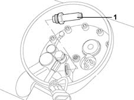

1043A59 SOLENOID VALVE on LPG 'system submerged electric pump - R.R. with LPG tank and valve unit cover removed
- Path
- Procedures > 10 ENGINE UNIT > 1043 LGP TANK AND PIPES > 1043A gpl tank > 1043A59 SOLENOID VALVE on LPG 'system submerged electric pump - R.R. with LPG tank and valve unit cover removed
- Kind
- repair procedure (removal / refitting; the operation number is the code)
- Applies to
- engines: 1.6 16v; all production periods; only with equipment: GPOWER
- Interactive page
- https://sloeber94.github.io/elrnDB-fMltpl/en/#/2891500
Applies to: engines: 1.6 16v; all production periods; only with equipment: GPOWER and Euro 3
 Removing
Removing
 Refitting
Refitting1043B49 coil of lpg fuel system intake solenoid r rwith tank and valve unit cover removed .
Before working on the solenoid valve piston, drain any air remaining in the tank following the procedure described 1043A08 lpg tank check seal .
1. Undo and remove the solenoid valve piston complete with seal.

Applies to: engines: 1.6 16v; all production periods; only with equipment: GPOWER and Euro 3
Refitting
RemovingFit a new seal on the piston.
Position the piston for the solenoid valve and tighten it.
 | Fastening | Component | Ø | Value (daNm) |
|---|---|---|---|---|
- | - | LPG UPTAKE SOLENOID | - | 1.6 - 1.7 |
1043B49 coil of lpg fuel system intake solenoid r rwith tank and valve unit cover removed .
Topics linked from this page (2)
- 1043A08 lpg tank check seal
- 1043B49 coil of lpg fuel system intake solenoid r rwith tank and valve unit cover removed